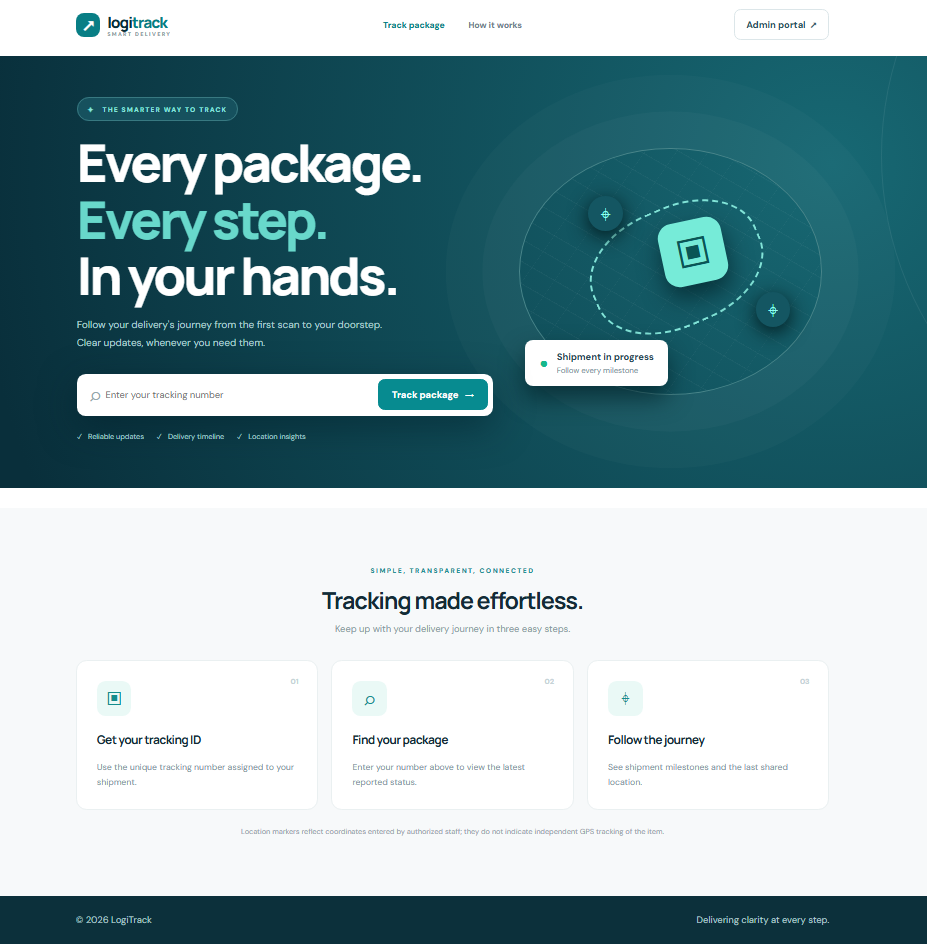
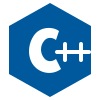
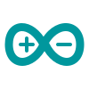
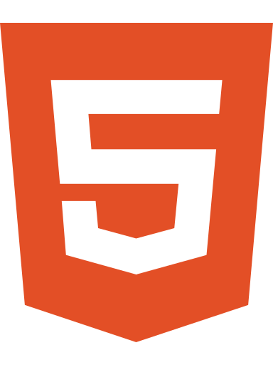
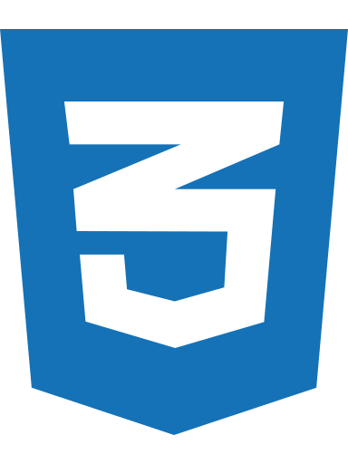
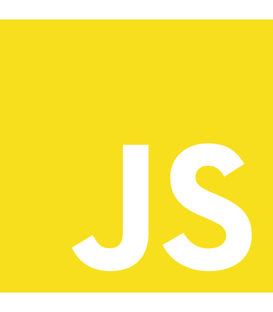
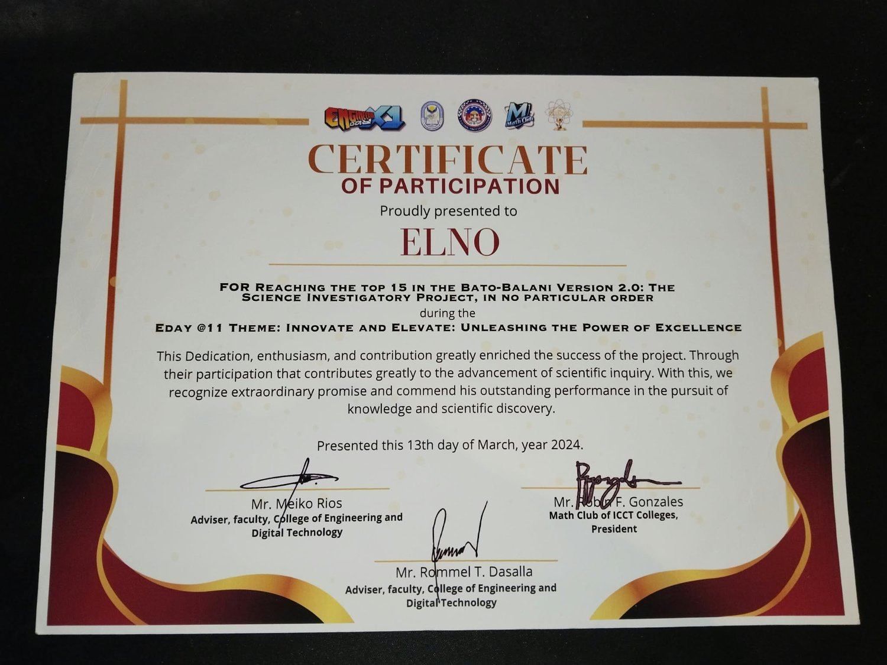

Hardware Integration
Microcontrollers, sensors, circuitry, and embedded prototypes that connect physical systems with software.
identity.session / portfolio active
Computer Engineering student building practical systems across Android, web, and embedded hardware. My recent work spans educational gaming, ministry tools, and logistics software.
01 / OPERATOR PROFILE
A Computer Engineering student at ICCT Colleges, working where electronics, software, and useful human experiences come together.
I am a Bachelor of Science in Computer Engineering student working across embedded electronics, Android apps, and responsive websites. My recent projects include ByteQuest, Synced N, and LogiTrack; I also build microcontroller prototypes and troubleshoot PC and network systems.
Microcontrollers, sensors, circuitry, and embedded prototypes that connect physical systems with software.
Interfaces and web applications developed with programming fundamentals, responsive design, and data workflows.
PC assembly, troubleshooting, Windows configuration, networking, and hands-on problem solving.
02 / ENGINEERING PIPELINE
The way I approach engineering tasks, from defining a problem to improving a prototype.
Identify needs, constraints, and the problem a solution must address.
Map out circuits, system components, interactions, and user flows.
Assemble hardware or implement initial application features.
Connect sensors, logic, data, and user interfaces into a single flow.
Check functionality, reproduce issues, and refine the experience.
Document the results, demonstrate the system, and plan improvements.
03 / PROJECT CASE FILES
Five case studies, with current features, technologies, contributions, and development status. Swipe to explore.
 Enlarge
Enlarge
An Arduino Uno robotics prototype using ultrasonic distance sensing and motor control to detect and navigate around obstacles.
A mobile robot needs to recognize nearby obstacles and respond to them.
Ultrasonic sensing, Arduino Uno control, motor driver, and servo steering logic.
Hands-on integration of sensing, electronics, and movement control.
Arduino Uno, ultrasonic distance sensor, servo, motor driver, wheels, and chassis.
Sensor input, threshold-based navigation decisions, motor actuation, and hardware testing.
 Enlarge
Enlarge
ESP32-based medicine reminder prototype with six configurable alarms, real-time scheduling, display controls, a rotating tray, and wireless alerts.
Medication schedules are easy to miss without a timely reminder.
ESP32 controller, DS3231 real-time clock, I²C LCD, three menu buttons, buzzer, LED, IR sensor, continuous-rotation servo tray, and RF transmitter.
Coordinating timed logic with physical components and user feedback.
Six alarms (A1–A6) with enable/disable settings, time adjustment, next-alarm display, and reminder handling.
Servo tray movement, sensor feedback, vibration/LED alert receiver, and coordinated embedded timing logic.

EnlargeA published shipment-tracking website and developing logistics platform for customers, couriers, and administrators, with status history and last-reported location.
Customers need a clearer way to check a shipment's reported progress.
Responsive tracking lookup, shipment milestones, customer-facing status and location views, plus Supabase database and authentication workflows in the broader system.
Web interface development, JavaScript interactions, cloud-backed data modeling, role-based workflows, and practical tracking transparency.
Customer shipment lookup; administrator shipment management and courier assignment; courier delivery-status and location updates.
Courier approval, separate dashboards, password recovery, and GPS/location-sharing workflows are areas of ongoing implementation and troubleshooting; location shown is last reported, not independent package GPS.
An Android church ministry app under development, supporting team coordination and song/chord workflows. I contribute as Frontend Developer and System Analyst.
Provide members and ministry leaders with a clear, accessible entry point for church-related information and coordination.
Worked on the application’s opening and sign-in screens, translating page requirements into mobile interface components, navigation elements, and account-entry fields.
Analyzed registration and sign-in flows, the distinction between member and administrator access, and how dashboards and announcements fit into the intended user experience.
The shared screenshots show the Get Started page and the login screen with email/mobile number and password inputs, password recovery, and a Google sign-in option.
Combined frontend implementation work with requirements analysis, helping align the screens and navigation structure with the intended ministry workflows.
Separate member and admin/leader experiences for ministry coordination, announcements, song details, and relevant team workflows.
Chord transposition, lyrics-only vocalist view, chord-and-lyrics instrumentalist view, and a compact metronome.
Automatic lyrics/chord scrolling with adjustable speed 1–10 per song, Start/Pause controls, pasted-sheet arrangement, adjustable font limits, and spacing/overlap refinements.
Active Android Studio work; UI features and interaction logic are being refined and device/build validation remains part of the development process.
MY ROLEAndroid Game Developer · Website DeveloperMade by MR.DEV
A beginner-friendly Computer Studies Android game with 40 core puzzles, 350 practice questions across seven subjects, lessons, XP, and achievement-based learning.
Make Computer Studies lessons easier to practice through bite-sized puzzles and quizzes.
Binary Builder and other interactive computer topics, lessons, quiz challenges, XP/progress tracking, achievements, reports, and classroom navigation.
Seven Computer Studies subjects with 50 questions each (350 total), plus 40 core puzzles and question explanations described on the published project website.
Android Game Developer and Website Developer (MR.DEV): game interface design, beginner-level learning activities, lesson and quiz structure, student dashboard, and the ByteQuest companion website.
Educational Android app design, gamified learning, progress-oriented UI, lesson structure, and an accompanying GitHub Pages website for app information and release access.
A public ByteQuest website links to the Android release/download flow. The website and the mobile app are separate project deliverables.
No projects match this filter.
2026 / LATEST DEVELOPMENT LOG
Focused updates from my latest Android and web work. Each entry distinguishes published work from ongoing development.
My role: Android Game Developer · Website Developer (MR.DEV)
Built a game-centered learning experience for Computer Studies students and a companion site that presents the app and its release information.
Frontend development and system analysis for a ministry app, with recent work on song presentation and worship-team controls.
Published a responsive parcel-tracking page while developing the broader system's customer, courier, and administrator workflows.
Across these projects I am practicing Android Studio development, system analysis, cloud data workflows, responsive web interfaces, testing, and iterative UI improvements.
05 / TECH STACK & PRACTICE
Programming, electronics, design, and troubleshooting skills gathered through academic projects and practical work.

C / C++
Arduino Android Studio
Android Studio
HTML
CSS
JavaScript Python
Python Java
Java MySQL
MySQL Kotlin
KotlinPC assembly and maintenance; Arduino Uno and ESP32 development; DS3231 RTC, I²C displays, IR/ultrasonic sensors, servo motors, RF alerts, and Raspberry Pi experimentation.
HTML, CSS, JavaScript, Kotlin/Android Studio, C/C++, Git/GitHub, responsive interfaces, Android navigation, chord/lyrics UI, and system analysis.
Supabase authentication and relational data workflows, tracking-system data design, LAN/router troubleshooting, Windows configuration, PC diagnostics, and technical support.
06 / EXPERIENCE & EDUCATION
Academic learning, technical leadership, and practical computer maintenance experience.
Android ministry app UI, member/admin flows, chord-sheet tools, and interaction refinements.
Created Computer Studies learning challenges, app interface, question bank, and companion GitHub Pages website under MR.DEV.
Published tracking website and cloud-backed logistics workflow development.
Media & Communication · River of Life Methodist Church
Technical support · Taytay, Rizal
Academic Embedded Systems Project · ICCT Colleges
Object-Oriented Programming Project · ICCT Colleges
Science Investigatory Project · ICCT Colleges
Senior High School Work Immersion · Taytay Senior High School
ICCT Colleges
Taytay Senior High School
Taytay National High School
RECOGNITION.LOG
Certificate presented to group ELNO for participation in the Top 15 at Bato-Balani Version 2.0, March 2024.
View certificate
07 / GITHUB SIGNAL
Explore my repositories and current public development activity directly on GitHub.
Source code, learning projects, and ongoing experiments.
Public profile statistics are loaded from GitHub when the connection is available.
08 / CONTACT.PORTAL
Interested in a software project, hardware prototype, or technical collaboration? Here's how to reach me.
Selecting an option opens your email app with a suggested subject. Nothing is sent automatically.